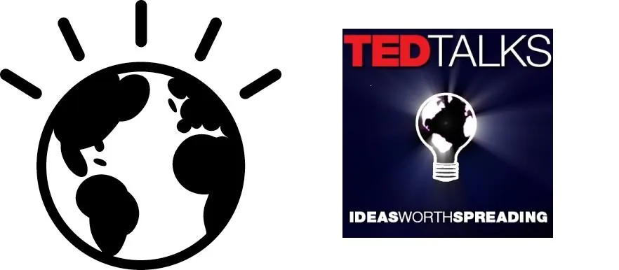

Blog · August 23, 2010
smarter planet: an idea worth spreading.
http://www.ibm.com/think 

Good luck resisting that click. You’ll find yourself at IBM’s Smarter Planet.
Interesting similarity between their logo and the TEDtalks lightbulb.
First published on my old blog, amyrobinson.wordpress.com, August 23, 2010.